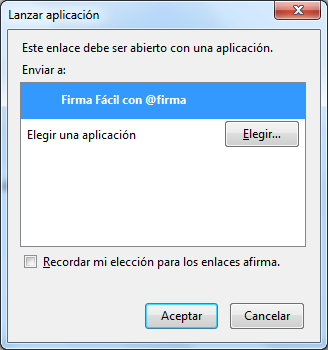
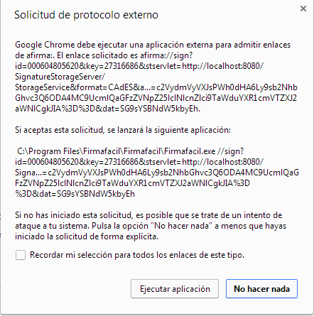
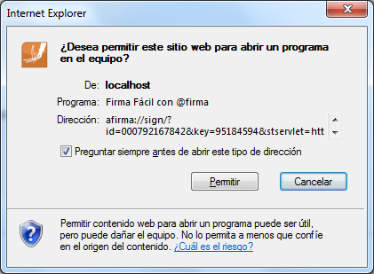
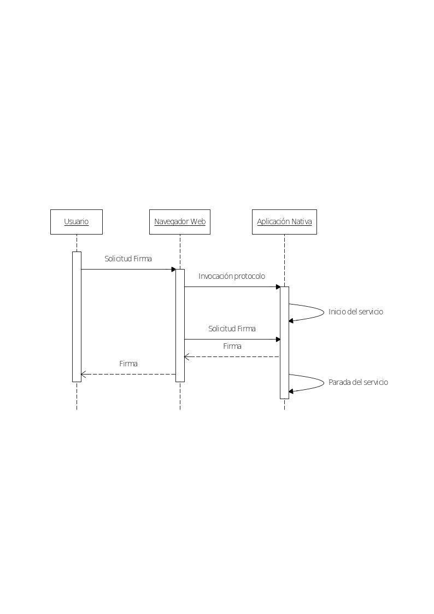
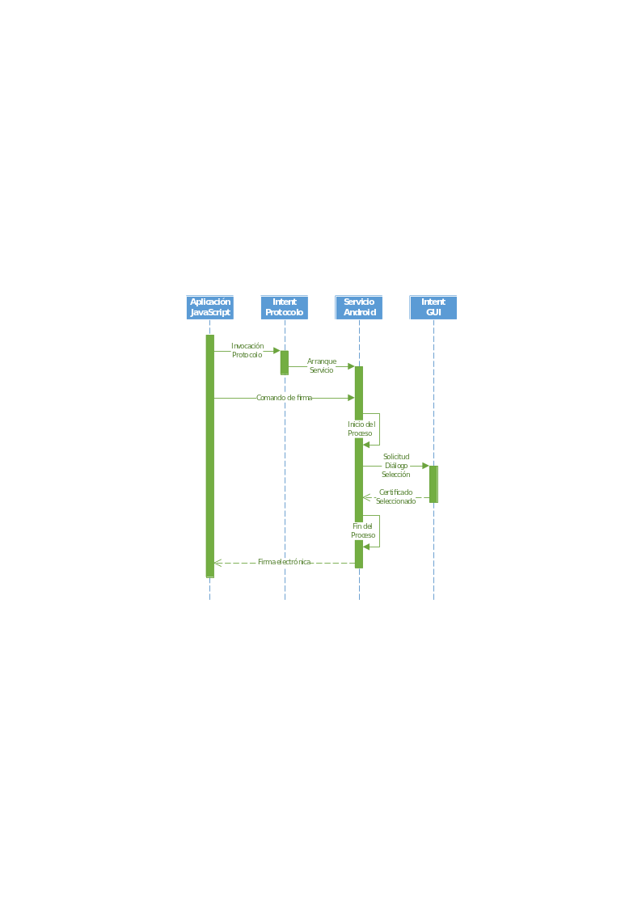
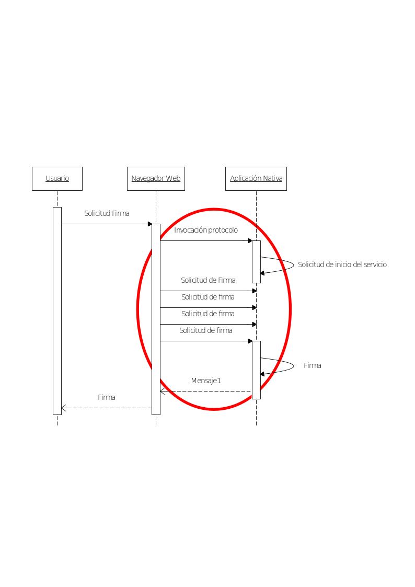
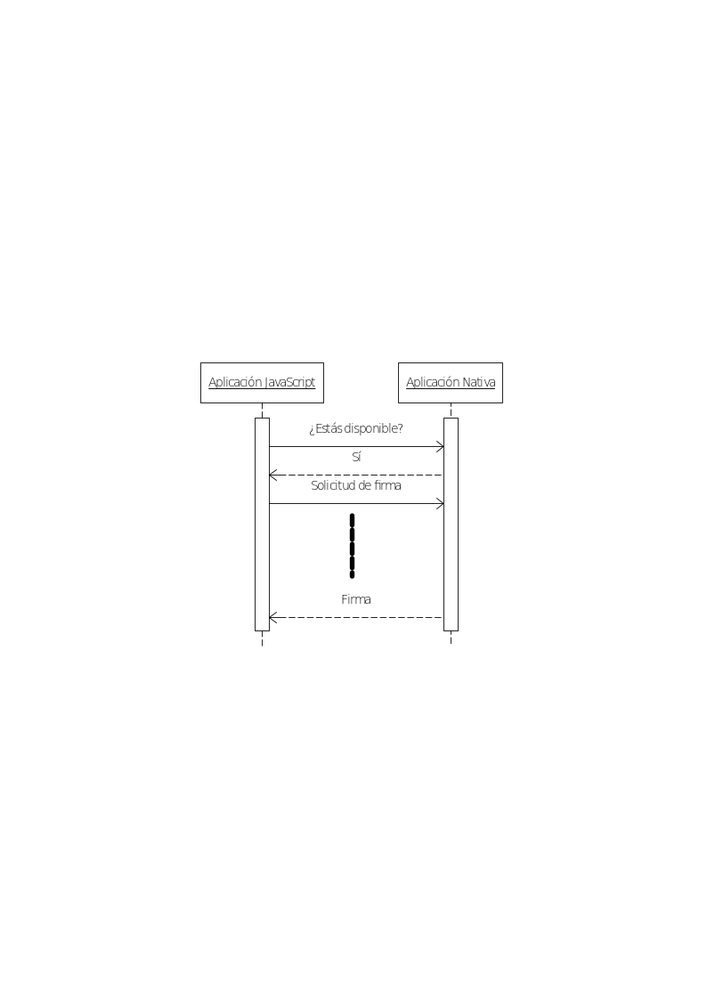

<
<
Esta obra está bajo una licencia Creative Commons Reconocimiento-NoComercial-CompartirIgual 3.0 Unported.
Índice
1. Introducción [5](#introducción)
2. Complementos para navegadores Web [6](#complementos-para-navegadores-web)
2.2.1. Cambios por cada navegador Web [10](#cambios-por-cada-navegador-web)
2.2.2. Cambios por sistema operativo [12](#cambios-por-sistema-operativo)
2.3.1. Firma trifásica [13](#firma-trifásica)
2.3.2. Firma local [14](#firma-local)
2.4. Conclusiones [15](#conclusiones)
3. Invocación por protocolo [16](#invocación-por-protocolo)
3.1. Invocación por protocolo en navegador Web [16](#invocación-por-protocolo-en-navegador-web)
3.1.1. Advertencias de apertura [17](#advertencias-de-apertura)
3.3.1. Asociación del protocolo [22](#asociación-del-protocolo)
3.3.2. Actualización de las aplicaciones [23](#actualización-de-las-aplicaciones)
3.4.1. Experiencia de usuario [24](#experiencia-de-usuario)
3.4.2. Complejidad en el despliegue [25](#complejidad-en-el-despliegue)
4. Conexión por servicio [26](#conexión-por-servicio)
4.1.2. Experiencia de usuario [28](#experiencia-de-usuario-1)
4.1.3. Reutilización del desarrollo Java [28](#reutilización-del-desarrollo-java)
4.1.4. Sin tráfico de red externo [29](#sin-tráfico-de-red-externo)
4.1.5. Seguridad [29](#seguridad)
5.2. Descripción funcional de la secuencia [32](#descripción-funcional-de-la-secuencia)
5.3. Consideraciones de implementación [33](#consideraciones-de-implementación)
5.4. Consideraciones de implementación [34](#consideraciones-de-implementación-1)
5.4.2. Uso de servicios de sistema operativo versus simples servicios TCP 34
5.5. Resumen y consideraciones finales [39](#resumen-y-consideraciones-finales)
6. API 100% JavaScript [40](#api-100-javascript)
6.1. Iniciativas WebCrypto de W3C [40](#iniciativas-webcrypto-de-w3c)
6.2. Alianza FIDO [41](#alianza-fido)
7. Resumen y recomendaciones finales [43](#resumen-y-recomendaciones-finales)
Índice de ilustraciones
Figure 1: Arquitectura genérica complemento navegador [6](#_Toc408253242)
Figure 2: Propuesta de advertencia para acceso a certificados [8](#_Toc408253243)
Figure 3: Propuesta de advertencia para acceso a claves privadas [8](#_Toc408253244)
Figure 4: Propuesta de diálogo permiso extendido de acceso a certificados [9](#_Toc408253245)
Figure 5: Propuesta de diálogo permiso extendido de acceso a claves privadas [9](#_Toc408253246)
Figure 6: Advertencia de invocación por protocolo en Mozilla Firefox [16](#_Toc408253247)
Figure 7: Advertencia de invocación por protocolo en Google Chrome [16](#_Toc408253248)
Figure 8: Advertencia de invocación por protocolo en Internet Explorer [17](#_Toc408253249)
Figure 9: Comunicación bidireccional en invocación por protocolo [19](#_Toc408253250)
Figure 10: Esquema simplificado de la comunicación por servicio [24](#_Toc408253251)
Figure 12: Invocación por protocolo más comunicación por servicio en Android [33](#_Toc408253253)
Figure 13: Múltiples llamadas esperando la operatividad del servicio [34](#_Toc408253254)
Figure 14: Llamada previa de comprobación de disponibilidad [35](#_Toc408253255)
Introducción
Los Applets de Java se han convertido en una verdadera pesadilla para usuarios y proveedores de servicios de firma electrónica en aplicaciones Web por muchos motivos:
-
Continuos problemas de compatibilidad por las actualizaciones de seguridad de Java.
-
Continuos problemas de seguridad del Java Plugin.
-
Incompatibilidad con muchos sistemas operativos:
-
Windows RT, Windows Phone.
-
iOS
-
Android
-
-
Incompatibilidad con ciertos navegadores Web:
-
Versiones futuras de Google Chrome.
-
Internet Explorer en modo UI Moderno.
-
-
Múltiples advertencias de seguridad y molestas necesidades de configuración para el usuario.
Pero estos inconvenientes no hacen desaparecer la necesidad de firma electrónica Web, por lo que se hace indispensable la búsqueda de alternativas, distinguiéndose distintas alternativas:
-
Complemento para navegador Web.
-
Invocación por protocolo.
-
Comunicación por servicio.
-
Invocación por protocolo más comunicación por servicio.
-
Firma 100% JavaScript.
A continuación se realizará un recorrido por cada una de estas estrategias, destacando sus ventajas e inconvenientes, desde todos los puntos de vista: del desarrollador, del integrador y del usuario, no olvidando las nuevas plataformas móviles en el análisis.
Complementos para navegadores Web
Arquitectura para la realización de firmas electrónicas
Un complemento de navegador para realizar firmas electrónicas, realmente como cualquier otro complemento, consta de una arquitectura básica de cuatro capas:
<
Figure 1: Arquitectura genérica complemento navegador
-
El API del sistema operativo que proporciona acceso al almacén de claves y certificados del usuario.
-
Un desarrollo para acceder al API superior, que debe ser nativo y privilegiado, ya que el acceso a las claves del usuario tiene implicaciones de seguridad.
-
Un API JavaScript que se expone a las aplicaciones Web, de forma que puedan usar el complemento de forma programática.
-
La aplicación Web (JavaScript) que implementa el integrador para solicitar una firma electrónica al usuario.
El API JavaScript para realizar firmas electrónicas
Una hipotética aplicación Web de firma electrónica que se apoyase en un complemento de navegador difiere mucho de una basada en Applets de Java en términos de arquitectura, ya que en las últimas prácticamente el 100% del proceso de firma se hace siguiendo el API JSE, mientras que en las primeras la lógica debe distribuirse entre un programa JavaScript que se ejecuta en el navegador Web como cualquier otro y el código nativo del complemento.
Lógica en el lado del complemento
Siendo la parte menos portable de los aplicativos y la más compleja de desplegar y actualizar (los usuarios no actualizan los complementos de sus navegadores con regularidad), lo deseable sería limitar la funcionalidad por parte del complemento a una funcionalidad mínima y no sujeta a cambios por evolución de las normativas.
Así, una propuesta de funcionalidades sería:
-
Firma PKCS#1 v1.5.
-
El soporte, si fuese necesario, de PKCS#1 2.0 podría hacerse como una extensión de la versión 1.5 desde la propia aplicación JavaScript.
-
Deben soportarse al menos los siguientes algoritmos:
-
SHA1withRSA
-
SHA256withRSA
-
SHA384withRSA
-
SHA512withRSA
-
-
En ningún caso debe permitirse una operación RSA con clave privada no asociada “atómicamente” a una huella digital (NONEwithRSA).
-
Los datos de entrada y de salida se tratarán siempre en Base64.
-
-
Obtención de certificado (en formato Base64).
-
Obtención de referencia a clave privada.
Dado que estas funcionalidades están parcialmente descritas en un estándar incipiente de la W3C (WebCrypto Key Discovery: http://www.w3.org/TR/2013/WD-webcrypto-key-discovery-20130108/), debería implementarse este API como exposición JavaScript siempre que fuese posible. De igual forma, debería intentarse una colaboración con este organismo para la evolución de la normativa justo con el desarrollo funcional del complemento.
Aspectos de seguridad en el desarrollo
Es justo esta parte del API de firma la que más cuidado debe tener en cuanto a la seguridad, puesto que es la que accede a las claves privadas del usuario y a la información personal contenida en los certificados.
Tratamiento de sesiones
Deben implementarse mecanismos que aseguren que las referencias obtenidas hacia las claves privadas (y preferiblemente también los identificadores de los certificados) sean de un solo uso limitado a la sesión y contexto JavaScript desde el cual se solicitaron, con independencia de que los distintos contextos provengan del mismo dominio Web.
Confirmaciones por parte del usuario
El usuario debe ser siempre consciente de cuando una aplicación Web accede tanto a sus certificados como a sus claves privadas y cuando realiza operaciones con esas claves privadas, y para ello debe proporcionar confirmaciones en diálogos gráficos que deben ser controlados desde la parte nativa del complemento.
<
Figure 2: Propuesta de advertencia para acceso a certificados
<
Figure 3: Propuesta de advertencia para acceso a claves privadas
No obstante, y para permitir los procesos de firmas por lotes, deben implementarse mecanismos para aplicar la confirmación en más de una operación, y para ello debe contemplarse:
- En las obtenciones de certificado y referencias a claves privadas:
<
Figure 4: Propuesta de diálogo permiso extendido de acceso a certificados
-
“No volver a preguntar para esta sesión”
- A partir de que el usuario confirme que no desea volver a ser preguntado, se podrán realizar operaciones de acceso a certificados siempre dentro de la misma sesión y contexto JavaScript.
-
“No volver a preguntar para este sitio Web”
-
Esta opción solo debe aparecer para sitios Web con SSL, y el permiso debe asociarse a la clave pública del certificado.
-
Deben rechazarse los certificados inadecuados (no mostrarse la opción en esos casos):
-
Expedidos para otro dominio.
-
Caducados o aún no válidos.
-
Cuya CA (Autoridad de Certificación) no sea de confianza.
-
-
-
- En las operaciones con la clave privada:
<
Figure 5: Propuesta de diálogo permiso extendido de acceso a claves privadas
-
En las operaciones de clave privada nunca se ofrecerá un permiso de forma permanente para el sitio Web, únicamente debe permitirse un permiso extendido para la sesión y contexto JavaScript actuales, y en este caso solo debe aparecer para sitios Web con SSL, y el permiso debe asociarse a la clave pública del certificado.
-
Deben rechazarse los certificados inadecuados (no mostrarse la opción en esos casos):
-
Expedidos para otro dominio.
-
Caducados o aún no válidos.
-
Cuya CA no sea de confianza.
-
-
# Concepto de sesión y contexto JavaScript
Anteriormente se ha hecho referencia al contexto JavaScript. Se entiende en cualquier caso el contexto JavaScript como el objeto en el que está contenido el código en ejecución. Habitualmente el contexto global es objeto “Window” de JavaScript, pero si las referencias a certificados y claves se solicitan desde un contexto inferior (por ejemplo, dentro de una función), deben implementarse mecanismos para que esa referencia no sea reutilizable desde un contexto superior (como el global), aunque sí desde nuevos contextos de nivel inferior.
El problema de la heterogeneidad de los complementos para navegadores Web
Cambios por cada navegador Web
Actualmente, los distintos navegadores Web implementan distintas tecnologías de complementos, lo que obliga a implementar un posible complemento de firma electrónica repitiendo el desarrollo por cada una de las tecnologías.
Tras el abandono de NPAPI (el API de complementos de Netscape) por parte de Google Chrome (http://blog.chromium.org/2013/09/saying-goodbye-to-our-old-friend-npapi.html), encontramos un escenario en el que Firefox y Safari utilizan NPAPI, Chrome su propio estándar “PepperAPI” (PPAPI) e Internet Explorer ha eliminado por completo el uso de complementos (ActiveX está en proceso de discontinuación):
| Apple Safari | NPAPI |
|---|---|
| Google Chrome | PPAPI |
| Microsoft Internet Explorer | -nd- |
| Mozilla Firefox | NPAPI |
Variaciones de navegador Web por sistema
Incluso dentro de un mismo navegador Web, encontramos que el soporte de complementos no es uniforme según el sistema operativo, teniendo versiones en las que no se soportan estos complementos, pudiéndose observar que los dispositivos móviles son sin duda un escollo de importancia.
| Google Chrome | Microsoft Windows | OK |
|---|---|---|
| Microsoft Windows Modern UI | KO | |
| Apple OS X | OK | |
| Google Android | KO | |
| Apple iOS | KO | |
| Linux | OK | |
| Apple Safari | Microsoft Windows | OK |
| Apple OS X | OK | |
| Apple iOS | KO | |
| Mozilla Firefox | Microsoft Windows | OK |
| Apple OS X | OK | |
| Google Android | OK* | |
| Linux | OK |
* Necesita desarrollo nativo dependiente de la arquitectura del dispositivo móvil.
Cambios por sistema operativo
Otro problema grave a tener en cuenta a la hora de abordar un desarrollo de complemento de navegador Web es que, incluso dentro de la misma tecnología de complementos, cada sistema operativo tiene su API para el acceso a claves criptográficas, y debe preverse una programación específica para cada caso:
| Apple OS X | Llavero de OS X |
|---|---|
| Microsoft Windows | Microsoft CAPI |
| Google Android desde 4.0 a 4.2 | Llavero de Android |
| Google Android a partir de 4.3 | Almacén JCA/JCE |
| Linux | NSS |
Acceso a tarjetas inteligentes
Y en un último nivel de complejidad, cada uno de esos API de acceso a claves criptográficas puede necesitar desarrollos adicionales con API diferentes, que duplican en los casos necesarios el esfuerzo de programación:
| Llavero de Apple OS X 10.9 y anteriores | Tokend |
|---|---|
| Llavero de Apple OS X 10.0 y superiores | CryptoTokenKit |
| Microsoft CAPI | API Integrado |
| NSS | PKCS#11 |
| Llavero de Android | -nd- |
| Almacén JCA/JCE | A medida vía API NFC, USB o PC/SC |
Solicitud del PIN o contraseña de los almacenes
Para finalizar, es importante reseñar que la gestión del PIN o contraseña de los almacenes de claves puede estar gestionado por el propio sistema operativo (en cuyo caso un posible complemento no necesita codificar ningún mecanismo de solicitud) o simplemente necesitar una gestión externa.
En este último caso, sería necesario codificar un diálogo de solicitud de contraseña que siguiese los siguientes parámetros:
-
Interfaz gráfico acorde con el sistema operativo.
-
Accesible para personas con discapacidad.
-
Seguro: No debe persistir el PIN o contraseña en memoria.
La siguiente tabla muestra en qué casos sería necesario este desarrollo y en cuáles no, necesitando en los casos de portabilidad la lógica para discernir cuando mostrarlo:
| Almacén de sistema | NSS | Necesita desarrollo |
|---|---|---|
| CAPI | Integrado | |
| Llavero de OS X | Integrado | |
| Llavero de Android | Integrado | |
| Almacén JCA/JCE | Necesita desarrollo | |
| Tarjeta inteligente | Tokend | Integrado |
| CryptoTokenKit | Integrado | |
| PKCS#11 | Necesita desarrollo | |
| A medida vía API NFC, USB o PC/SC | Necesita desarrollo |
Desarrollos adicionales para realizar firmas AdES
Como se ha expuesto anteriormente, es preferible que un complemento de navegador se limite a la realización de firmas PKCS#1 y a la obtención de los certificados de usuario.
Así, sería responsabilidad de una capa adicional desarrollada en JavaScript “genérico” la transformación de esas firmas PKCS#1 en firmas AdES acordes a normativas europeas. Esta capa se ejecutaría como cualquier otra aplicación Web JavaScript, mediante su publicación en servidor Web y de un modo no privilegiado dentro del navegador y de la página Web.
De esta forma, esta capa JavaScript tendría dos opciones muy diferentes, la realización local de las firmas electrónicas o el uso de técnicas trifásicas apoyándose en un servidor externo.
Firma trifásica
En el caso de una operación trifásica la solución al problema de la realización de firmas AdES está ya realmente resuelto, ya que es posible adaptar, con un esfuerzo limitado, el código JavaScript actual del MiniApplet Cliente @firma para acceder al complemento en la fase central y delegar en servidor las pre-firmas y post-firmas.
Firma local
La realización local de firmas AdES tiene una dificultad muy elevada, ya que sería necesaria una codificación de toda la lógica CAdES, XAdES y PAdES en JavaScript.
XAdES
La realización de firmas XAdES en JavaScript requeriría el uso de bibliotecas XML de terceros, que soportasen, entre otras, las siguientes funcionalidades:
-
XPATH y XPATH2
-
De-referenciación interna a XML.
-
Realización de huellas digitales.
-
Canonicalización de XML.
Actualmente existen bibliotecas JavaScript con funcionalidades básicas de XMLDSig que podrían ser utilizadas como base para la realización de firmas XAdES, y que cuentas con la lógica antes enumerada:
CAdES
La realización de firmas CAdES 100% en JavaScript es realmente compleja, ya que requiere distintas tecnologías que por su carácter binario no son comunes en JavaScript:
-
Trabajo en Base64 como si se tratase de datos binarios nativos.
-
API ASN.1
-
API PKCS#7
-
Huellas digitales SHA
-
Etc.
PAdES
La firma PAdES 100% JavaScript es sin duda la opción más compleja, y requeriría la implementación previa de CAdES más funcionalidades específicas de tratamiento de PDF, tanto la extracción de su rango procesable como el tratamiento de sus campos internos (AcroFields), su diccionario, sus metadatos, etc.
Estas funcionalidades no están presentes en ningún API PDF en JavaScript, por lo que habría que ampliar uno para añadir esta nueva lógica, siendo el punto de partida más apropiado el proyecto PDFJS de Mozilla: http://mozilla.github.io/pdf.js/
Conclusiones
El desarrollo de un complemento para navegador no es realmente un único desarrollo, sino que son varios y distintos desarrollos dependiendo de sistema operativo y navegador Web, pero incluso con ese sobreesfuerzo hay plataformas en las que no es posible usar complementos:
-
Navegadores:
-
Internet Explorer, en cualquier plataforma.
-
Google Chrome, en Windows 8 y superiores en modo “UI moderno”, iOS y Android.
-
Safari en iOS.
-
-
Sistemas operativos:
-
iOS.
-
Android.
-
Pero además del enorme esfuerzo y el soporte parcial de plataformas operativas, hay un factor adicional que desaconseja aún más el desarrollo de complementos para navegador: La seguridad.
Tradicionalmente, los complementos de navegador han sido una fuente de problemas de seguridad, y es la razón que ha llevado a algunos de los más populares, como Adobe Flash o Oracle Java a marcarse como inseguros y considerarse como fuente común de inseguridades.
Así, un complemento, que abre una puerta al código nativo privilegiado desde el código JavaScript accesible por páginas de Internet, es una enorme responsabilidad en cuanto a la seguridad. Esta responsabilidad implica la necesidad de provisionar un esfuerzo constante de auditoría y actualización del código, así como a implementar formas que faciliten a los usuarios actualizar el complemento tan pronto como estén listas nuevas versiones.
Con independencia de las dificultades, la implementación de este tipo de complementos debería hacerse siempre de forma coordinada con los grupos W3C WebCrypto, de forma que se intercambien experiencias, compartan esfuerzos y, lo que es más importante, se facilite la futura migración a los incipientes estándares Web.
Invocación por protocolo
Los sistemas operativos actuales mantienen una serie de asociaciones entre tipos de fichero y las aplicaciones que son capaces de tratarlos. Así, si en un sistema operativo Windows se indica que se abra un documento de texto, este consultará en el Registro de Windows cual es la aplicación por defecto asociada para su tratamiento (usualmente el Bloc de Notas), y procederá a abrir esta aplicación pasando como parámetro la ruta completa del fichero en el esquema de argumentos definido en el propio Registro de Windows como parte de la asociación.
Esta asociación se hace de distintas formas según el sistema operativo, en Windows es por su extensión (“txt” en nuestro ejemplo), pero por ejemplo en Linux es por su MIME-Type (text/plain en el ejemplo).
Este mismo esquema se define igualmente en la mayoría de los sistemas operativos para los esquemas comunes de protocolos basados en URN/URI/URL. Así, por ejemplo, si en un sistema operativo Windows indicamos que queremos abrir http://www.atos.net (por ejemplo, desde la línea de comandos con la sentencia “start http://www.atos.net”) se iniciará el navegador Web por defecto, que es la aplicación asociada para tratar el protocolo http, procediendo a abrir esa página Web.
Este modo de abrir aplicaciones se conoce como invocación por protocolo, y de forma análoga a la invocación para abrir aplicaciones indicando un fichero, donde antes se recibía la ruta completa del archivo a abrir, ahora se recibe la URL/URI/URN completa que se indicó abrir.
Invocación por protocolo en navegador Web
Este mecanismo de invocación por protocolo de los sistemas operativos es usualmente accesible desde los navegadores Web. Esto quiere decir que si en la barra de direcciones del navegador Web indicamos una URI, el navegador Web trasladará el control al sistema operativo para que este localice la aplicación apropiada para tratar el protocolo asociado a la URI, y la abra pasándole dicha URI.
Un ejemplo de este mecanismo en Apple iOS podría ser el soporte del protocolo “tel” en forma de URN con el formato “tel://1-408-555-5555”, donde 1-408-555-5555 es un número de teléfono. Así una llamada desde una página Web a esta URN con una sentencia HTML como la siguiente, “<a href="tel://1-408-555-5555">1-408-555-5555</a>”,provoca que se active el teléfono (en un iPhone) y realice una llamada a ese número, ya que la aplicación nativa de teléfono de iOS tiene registrado ese esquema de protocolo.
En este caso tenemos una salvedad evidente, y es que el navegador Web obviará esta transferencia de control al sistema operativo cuando el propio navegador sepa cómo tratar el protocolo, por ejemplo, con http, https, ftp, etc.
Advertencias de apertura
Como la invocación por protocolo no deja de ser una transferencia de datos desde una página Web (que no tiene porqué ser de confianza) a una aplicación nativa, los navegadores Web acostumbran a advertir de este cambio al usuario:
<
Figure 6: Advertencia de invocación por protocolo en Mozilla Firefox
<
Figure 7: Advertencia de invocación por protocolo en Google Chrome
<
Figure 8: Advertencia de invocación por protocolo en Internet Explorer
En general, todos los navegadores Web muestran algún tipo de advertencia, excepto Apple Safari en Windows, OS X e iOS y WebKit (Android). En el caso de Internet Explorer se comprueba además la firma electrónica del ejecutable del programa nativo invocado.
Firma electrónica del ejecutable para invocación por protocolo en Internet Explorer
Dado que Internet Explorer comprueba las firmas electrónicas de los programas invocados mediante protocolo, la firma de estos es un requisito indispensable. No obstante las firmas deben ser siempre de ejecutables en formato PE (Ejecutable portable) de Microsoft.
Si la aplicación invocada está desarrollada en Java, realmente la aplicación que se invoca no será la provista (un JAR de Java), sino el propio entorno de ejecución de Java (JRE), cuya firma electrónica no puede ser controlada (el JRE lo instala el usuario de un proveedor ajeno, como Oracle).
Para sortear este problema se hace necesario el uso de un “lanzador” en formato PE (EXE de Windows) que se pueda firmar electrónicamente, sea el invocado por protocolo y se encargue de lanzar el JAR a través del JRE.
Como recomendación, la aplicación Launch4J (http://launch4j.sourceforge.net/) es capaz de crear ejecutables de tipo PE a partir de un JAR de Java, sorteando el inconveniente mencionado. Es quizás importante mencionar que un ejecutable generado con Launch4J no puede ser firmado mediante el firmador PE de Microsoft (SignTool), siendo necesario usar otras herramientas, como Sign4J (https://github.com/fbergmann/launch4j/tree/master/sign4j).
Soporte a la invocación por protocolo en navegadores Web
La inmensa mayoría de los navegadores Web soportan la invocación por protocolo, con la única excepción de Google Chrome en su versión “Windows 8 UI Moderno”:
| Chrome | Windows 8 y superiores en UI Moderno | NO |
|---|---|---|
| Resto de sistemas (Android, iOS, Linux, Windows) | SÍ | |
| Safari | Todos los sistemas (iOS, OS X) | SÍ |
| Internet Explorer | Todos los sistemas (Windows, Windows Phone, Windows RT) | SÍ |
| Firefox | Todos los sistemas (Windows, Linux, OS X, Android) | SÍ |
La invocación por protocolo como sustituto de los Applets de Java
La invocación por protocolo puede, en ciertos casos, plantearse como un sustituto de los Applets de Java, si bien es necesario tener en cuenta siempre:
-
En ciertos sistemas operativos, la invocación de una aplicación desde el navegador Web provoca un cambio de contexto gráfico molesto para el usuario (desde el navegador a la aplicación), y además al cerrarse la aplicación no siempre se vuelve de forma automática al navegador.
-
Sistemas operativos con cambios de contexto:
-
Microsoft Windows 8 en modo UI Moderno.
-
Apple iOS
-
-
Sistemas operativos sin cambio de contexto:
-
Apple OS X
-
Microsoft Windows
-
Google Android
-
Linux
-
-
Sistemas operativos con un “cambio parcial” de contexto (la experiencia de usuario es aceptable)
- Microsoft Windows 8.1
-
-
No es posible tener un UI integrado en la página Web, como ocurre con los Applets de Java, Adobe Flash o los controles Active X.
-
Una vez se invoca la aplicación desde el navegador, no puede existir una comunicación bidireccional directa entre ambos (aplicación nativa y JavaScript de la página Web), como sí ocurre en los Applets de Java.
- La aplicación nativa, no obstante, puede recibir información en la propia URL de invocación, aunque hay que tener en cuenta que la longitud de esta es limitada.
Comunicación entre aplicación nativa y aplicación JavaScript
Como se ha comentado, una aplicación JavaScript ejecutándose en un navegador Web puede invocar una aplicación nativa siempre que esta esté registrada como la aplicación por defecto para tratar un protocolo que no trate el propio navegador (por ejemplo, el Cliente @firma usa el protocolo afirma en una URI del estilo “afirma://”), proporcionando ciertos datos como parte de la propia URI de invocación, pero… ¿Cómo puede la aplicación nativa devolver datos a la aplicación JavaScript?
El modo más directo y sencillo es usar un servidor (accesible por ambas partes) como intermediario en ese diálogo, en una secuencia acorde al siguiente esquema:
<
Figure 9: Comunicación bidireccional en invocación por protocolo
-
El navegador Web invoca a una App nativa mediante una URI especial, indicando una serie de información (datos a firmar, formato, opciones, etc.).
-
La App recibe los datos y realiza la firma electrónica usando las funciones nativas de gestión de claves y certificados.
-
La App nativa deposita el resultado de la firma en un servidor intermediario mediante una llamada a un servicio Web simple.
-
El navegador Web recoge el resultado de la operación de firma del servidor intermediario y continúa la ejecución de la lógica de negocio.
Como resultado tenemos una comunicación cuasi-bidireccional entre navegador Web (JavaScript) y App nativa, supliendo completamente a los complementos tradicionales.
Este modelo no obstante, requiere de ciertas precauciones para resultar eficaz y seguro:
-
El servidor intermediario y la aplicación Web deben estar preferentemente en el mismo servidor (para evitar advertencias de cross site scripting). Si se usa SSL cliente, este debe requerirse únicamente en el servidor que aloja la aplicación Web, y no en el servidor intermediario (para evitar una solicitud de autenticación a la aplicación nativa), pero siempre estando ambos con HTTPS en el mismo nombre de servidor.
-
El servidor intermediario debe implementar mecanismos para asegurarse de que los datos depositados por una aplicación nativa sean recogidos únicamente por la aplicación JavaScript que la invocó:
-
Para ello deben implementarse al menos todos estos mecanismos:
-
Los datos deben cifrarse mediante una clave aleatoria de un solo uso generada al vuelo desde el programa JavaScript, que se pasa a la aplicación nativa mediante la URI de invocación.
-
Los datos deben tener un identificador aleatorio de un solo uso generado al vuelo desde el programa JavaScript, que se pasa a la aplicación nativa mediante la URI de invocación.
-
El servidor debe borrar cualquier dato que se deposite en él y que no sea requerido en un tiempo determinado (unos pocos minutos, que es lo máximo que puede durar la operación en la aplicación nativa).
-
-
No deben implementarse mecanismos derivados de la dirección IP, ya que las conexiones 3G pueden variar de IP en una misma sesión.
Consideraciones de seguridad
En el flujo anteriormente descrito se observa que JavaScript solicita los resultados de la operación de firma a un servidor intermedio, pero ¿Cómo es posible garantizar que el servidor intermedio devuelve los resultados únicamente al cliente que originó la petición? Son varias las recomendaciones en cuanto a seguridad para garantizar que se cumpla esta premisa:
-
El cliente debe generar un identificador único “al vuelo” (por ejemplo, un UUID según RFC-4122, que prácticamente imposibilita encontrarlo por fuerza bruta o azar) al iniciar la transacción, y pedir los datos al servidor indicando este UUID.
-
El cliente debe generar “al vuelo” una clave única de cifrado simétrico (por ejemplo 3DES) que se trasladará en la invocación a la aplicación nativa. Esta subirá los datos al servidor ya cifrados, por lo que este servidor jamás conocerá la clave de cifrado (el descifrado se realizará en la aplicación JavaScript mediante lógica JavaScript).
-
Cuando unos datos se suban al servidor intermedio, este establecerá un “periodo de caducidad”, y estos datos serán borrados tras cumplirse este periodo de caducidad. Esto limita la ventana temporal en la que los datos están accesibles desde Internet y limita los posibles ataques.
-
Debe usarse SSL en todas las transacciones.
Implementación de la aplicación nativa susceptible de ser invocada por protocolo
Una de las ventajas de la invocación por protocolo es que la aplicación, siempre que esté asociada adecuadamente al protocolo, no tiene que seguir un API específico ni una normativa concreta, puede ser cualquier tipo de aplicación.
Así, es posible realizar una implementación en Java (para una aplicación de firma, reutilizando los activos Java del Cliente @firma) que cubra una buena parte de los sistemas operativos. Concretamente, una aplicación JSE funcionaría sin problemas en Windows, Linux y OS X, y partes de esta aplicación podrían ser reutilizadas en Android.
En general, se podría abordar la implementación siguiendo este cuadro de lenguajes de programación:
| Windows | Java JSE |
|---|---|
| Linux | |
| OS X | |
| Android | Java Dalvik |
| Windows RT, Windows Phone, Windows UI Moderno | .NET / C# |
| iOS | Objective C / Swift |
Asociación del protocolo
Un problema distinto por cada uno de los sistemas operativos es como se realiza la asociación de la aplicación con el protocolo específico por el que se le invoca:
-
Microsoft Windows
- Asociación en Registro de Windows. Debe hacerse mediante un programa específico de instalación.
-
Apple OS X
- Declarado en la aplicación.
-
Apple iOS
- Declarado en la aplicación.
-
Google Android
- Declarado en la aplicación.
-
Linux
- Asociación dual en Firefox y en el gestor de ventanas del sistema operativo (Gnome, KDE, etc.). Debe hacerse mediante un programa específico de instalación (por ejemplo, un paquete DEB).
Actualización de las aplicaciones
Mientras que en un Applet de Java el integrador controla fácilmente la versión que se ejecuta (la que él publica en su servidor Web), con una aplicación instalada el escenario es completamente distinto, ya que es imposible conocer cuál es la versión que el usuario tiene instalada en su ordenador.
Este inconveniente obliga a integrador y usuario a usar siempre las últimas versiones disponibles, en la primera parte del JavaScript de integración y en la segunda de la aplicación instalada localmente. Para este segundo caso, siendo el ciudadano el responsable, es necesario implementar mecanismos de notificación de disponibilidad de nuevas versiones que faciliten la actualización.
Estos mecanismos difieren notablemente según el sistema operativo, en los sistemas más modernos será un proceso completamente automático gestionado por las tiendas de aplicaciones, mientras que en los tradicionales tendrá que ser un proceso manual:
| Windows | Proceso manual |
|---|---|
| OS X | Tienda: AppStore |
| iOS | Tienda: AppStore |
| Android | Tienda: Google Play |
| Linux | Tienda: Repositorio de paquetes |
| Windows UI Moderno, Windows Phone, Windows RT | Tienda: Windows Store |
Los entornos que requieran tienda necesitarán una publicación (que acostumbra a suponer costes recurrentes de mantenimiento de cuentas) y actualización en ellas y el cumplimiento de las normas de codificación de estas.
En un proceso manual, se necesitará de una combinación de funcionalidades cliente (comprobación periódica de disponibilidad de nueva versión), servidor (informar esta disponibilidad y publicación de actualizaciones) y usuario (autorizar e iniciar la actualización).
Dependencias con el JRE en el caso de aplicaciones desarrolladas en Java
Evidentemente, cualquier aplicación Java necesita un entorno de ejecución de Java (JRE) para ejecutarse. Detrás de esta obviedad encontramos un aspecto crítico a tener en cuenta para implantar una estrategia de invocación por protocolo, y es que el usuario no solo debe instalar y mantener la propia aplicación Java, sino también el JRE.
Este mantenimiento, además de ser muy molesto para el usuario, introduce otros efectos no deseados, como que el usuario pueda actualizar a un JRE no compatible con la aplicación, o que la aplicación le inste a instalar un JRE no compatible con otras aplicaciones de su equipo.
Adicionalmente, la dependencia externa con un JRE impide, por política, la publicación de una aplicación en la AppStore de OS X, un nuevo problema que inhabilitaría las actualizaciones automáticas a través de tienda de aplicaciones.
Para solventar estos problemas es más que recomendable que la aplicación incluya internamente un JRE para su uso exclusivo (preferentemente OpenJDK para evitar problemas de licenciamiento). Esta opción apenas incrementa el tamaño de descarga en menos de 30MB (no notable con las conexiones de banda ancha actuales) y evita por completo los inconvenientes antes enumerados.
Al ser un JRE no registrado en el sistema operativo (uso excluso de nuestra aplicación) no influiría en los JRE ya existentes ni en la configuración del usuario, al no instalar ni necesitar un Java Plugin no introduce problemas de seguridad en el equipo y al ser un JRE preseleccionado y probado se garantiza la compatibilidad con la aplicación.
Existen diversas formas de integrar un JRE con una aplicación Java de forma cohesionada, desde una combinación de Launch4J y NSIS en Windows, el empaquetado específico de la “.app” en OS X o el empaquetado específico de un distribuible de Debian (“.deb”) en Linux.
Consideraciones generales de la invocación por protocolo
Experiencia de usuario
La experiencia de usuario en la invocación por protocolo tiene un escollo importante cuando el usuario no cuenta con la aplicación instalada. Las aplicaciones JavaScript no pueden (por motivos obvios de seguridad) saber que aplicaciones tiene o no instaladas un usuario, por lo que iniciarán la invocación por protocolo “a ciegas”, suponiendo que la aplicación está adecuadamente instalada en el equipo, lo que derivará en un error en caso de que esto no sea así. Deben buscarse mecanismos de enmascarar este error de una forma que no desconcierte al usuario, así como debe advertirse al usuario de la necesidad de contar con la aplicación instalada antes de iniciar el trámite.
El otro problema de cara a la experiencia de usuario son los sistemas operativos en los que el tránsito desde el navegador a la aplicación nativa y de vuelta desde ésta de nuevo al navegador provoca un “cambio de contexto”. Este cambio de contexto es molesto y hace que el usuario deba volver manualmente al navegador, lo que puede desconcertar al usuario. Esta situación se da en los siguientes sistemas operativos:
-
Microsoft Windows “UI Moderno” (incluyendo Windows RT y Windows en versiones 8, 8.1 y 10).
-
Microsoft Windows Phone.
-
Apple iOS.
Complejidad en el despliegue
La necesidad de un servidor intermedio dificulta en gran manera los despliegues, ya que hace necesario un pequeño servicio Web (JEE o equivalente) además del servidor Web de publicación del HTML + JavaScript. Este servidor intermedio hace además que se multipliquen las conexiones de red y el tráfico de datos, lo cual no solo ralentiza la operación, sino que hace más difícil el diagnóstico de los posibles fallos en el proceso de firma.
Conexión por servicio
Una de las deficiencias más grandes de la invocación por protocolo es la necesidad de un servidor intermedio que gestione la comunicación de vuelta al navegador Web. No obstante, si una aplicación nativa puede actuar como servidor de “sockets” TCP o de servidor HTTP y una aplicación JavaScript en un navegador puede establecer conexiones HTTP o WebSocket… ¿Por qué no usar estas tecnologías para establecer una comunicación local?
<
Figure 10: Esquema simplificado de la comunicación por servicio
En este escenario, la aplicación local se ejecutaría como servicio en la máquina del usuario, escuchando a la espera de una solicitud en un puerto TCP fijo, mientras que sería la aplicación JavaScript de firma la que iniciaría el diálogo mediante una llamadas (WebSocket o HTTP) a “localhost”.
En este punto, sería preferible el uso de llamadas HTTP (en detrimento de WebSockets), para ampliar la compatibilidad a navegadores Web antiguos, ya que la compatibilidad con WebSockets se limita a las versiones presentadas en esta tabla:
| Compatibilidad con WebSocket (RFC 6455) | |||
|---|---|---|---|
| Apple Safari | Google Chrome | Mozilla Firefox | MS Internet Explorer |
| Versión 6 o superior | Versión 16 o superior | Versión 11 o superior | Versión 10 o superior |
Ventajas y desventajas de la comunicación por servicio
Compatibilidad con distintos sistemas operativos
Por desgracia, hay sistemas operativos donde no es posible usar una invocación por servicio por distintas razones:
| Windows | Windows RT | OS X | Linux | iOS | Android |
|---|---|---|---|---|---|
| Compatible | No compatible | Compatible | Compatible | No compatible | Desaconsejado |
En los casos de Apple iOS (iPad, iPhone, etc.) no es posible la apertura de servicios locales (el fabricante lo prohíbe por motivos de seguridad), mientras que en el caso de Android, si bien es perfectamente posible desde un punto de vista técnico, desde una orientación práctica es desaconsejable, ya que un servicio de estas características disminuiría notablemente la duración de la batería del dispositivo.
Uso con servidores de terminales: Microsoft Terminal Server y Citrix
Un caso muy particular de compatibilidad que se ve afectado para las comunicaciones por servicio es cuando el ordenador del usuario funciona en modo terminal con un producto Windows de servicio de terminales como RDP (Microsoft Terminal Server) o ICA (Citrix).
En estos casos no es posible seguir esta estrategia, ya que los servicios locales no lo son a los propios terminales, sino al servidor de estos, por lo que el servicio, al ser servicio de servidor, no podría determinar de forma segura quien es el originario de la petición sin realizar una serie de complejas lógicas:
-
El servicio debe proporcionarse de forma centralizada desde el servidor de terminales, para evitar que varios servicios intenten escuchar peticiones en el mismo puerto provocando conflictos.
-
El servicio debe implementar mecanismos para determinar qué usuario realizó la petición de firma, y acceder al almacén de claves y certificados correspondiente a ese usuario.
- Deben implementarse las medidas de seguridad adecuadas para evitar la impostación de identidades y que un usuario de terminal acceda a las claves de otro usuario de terminal.
Estas lógicas deben implementarse como desarrollos de extensión a los servicios de terminal, usando para ello los kits de desarrollo de los distintos servidores (los SDK de Microsoft y los SDK de Citrix). Esta implementación es compleja en sí misma, y no puede reutilizarse de un producto servidor a otro.
Experiencia de usuario
La primera ventaja del uso de servicios locales es la experiencia de usuario, ya que no hay tiempo de espera de arranque de aplicaciones (más rápido que cualquier otro medio, ya que la aplicación está siempre precargada en memoria) y no hay diálogos de advertencia (excepto los que se quieran añadir por seguridad en el desarrollo).
No obstante, en el caso de Windows 8 y superiores en modo “UI Moderno”, seguiríamos teniendo los problemas de cambio de contexto que ya se describieron en el apartado “La invocación por protocolo como sustituto de los Applets de Java”. No es posible eliminar estos inconvenientes, ya que es necesaria una interacción directa con el usuario (interfaz gráfica por parte de la aplicación proveedora del servicio) como mínimo para control de seguridad (nunca permitir una ejecución oculta) y para preservar la privacidad del usuario (la selección de certificados debe hacerse con interfaz propio, para evitar que se expongan a las aplicaciones Web detalles de certificados que no están relacionados con la operación en curso).
Reutilización del desarrollo Java
Otra ventaja es que podría reutilizarse un desarrollo Java para la realización de las operaciones de firma electrónica en buena parte de los sistemas, disminuyendo la duplicidad de esfuerzos en el desarrollo.
No obstante, dado que se trata de un proveedor de servicios a nivel de sistema operativo, es prácticamente obligatorio desarrollar un interfaz nativo en cada sistema operativo siguiendo las especificaciones que el fabricante de este indique, obteniendo así los beneficios de los que disfrutan los servicios comunes:
-
Gestión a nivel de sistema operativo.
-
Autoarranque en caso de caída.
-
Configuración común.
-
Etc.
En general, estas serían las interfaces según cada sistema operativo:
| Windows | Deben implementarse los requisitos definidos en la especificación Services Control Manager de Microsoft. Adicionalmente, dado que el servicio tendrá interfaz gráfica propia, y debido a las restricciones de seguridad impuestas para los servicios en sistemas Windows a partir de Windows Vista, es necesario seguir las pautas conocidas como Windows Service Hardening. API disponible en C++ y .NET, pero no en Java. |
|---|---|
| OS X | Deben implementare las interfaces definidas por Apple. API disponible en Objective C. |
| Android | Deben implementarse las interfaces definidas por Google. API disponible en Java, pero válidos únicamente para Android. |
| Linux | Distintas opciones. En el caso más simple puede desarrollarse en Java y arrancarse mediante simples scripts de sistema (SH, BASH, etc.). |
Así, podemos observar que serían necesarios ciertos desarrollos nativos por cada sistema operativo, que deben conectar con el código Java (reutilizado del Cliente @firma) para realizar las firmas electrónicas en sí.
Este enlace Nativo <-> Java no es en absoluto desdeñable, especialmente en el caso de Windows, ya que los requisitos de seguridad mencionados anteriormente (Windows Service Hardening) establecen numerosas restricciones de seguridad que dificultan este traspaso bidireccional desde C++ o .NET (C#, Visual Basic, etc.) hacia Java.
Sin tráfico de red externo
Una ventaja más, en este caso con respecto a la alternativa de invocación por protocolo, es que la sincronización del navegador y la aplicación mediante un servicio no conlleva tráfico de red externo. El tráfico de red supondría un coste en:
-
Consumo de red, que puede ser crítico en entornos móviles con coste monetario por transmisión de datos.
-
Tiempo de transmisión:
-
Los datos se envían desde el navegador al servicio externo (tiempo de espera en el navegador web).
-
Los datos se descargan desde el servicio a la aplicación (tiempo de espera en la aplicación).
-
La firma se envía al servicio externo desde la aplicación (tiempo de espera en la aplicación).
-
La firma se descarga desde el servicio externo al navegador (tiempo de espera en el navegador web).
-
Estos costes se incrementarían de forma proporcional al tamaño de los datos.
En la invocación por servicio, estos costes no existen.
Seguridad
La seguridad es sin duda el punto más flojo de esta estrategia de sustitución de los Applets de Java, por varios motivos:
-
Un servicio accesible desde TCP es un punto de entrada muy peligroso a nuestras claves privadas y certificados:
-
La necesidad de usar siempre el mismo puerto hace que no sea necesario una exploración previa de los puertos para iniciar un ataque.
-
Aunque solo aceptemos conexiones locales, es muy fácil impostar la IP de origen para que parezca local.
-
Cualquier servicio TCP es susceptible a ataques, hasta el mejor programador puede dejar compromisos de seguridad en su código: tratamiento de buffers en C++, inseguridades propias de los entornos de ejecución (Visual C++, Java, .NET...), etc.
-
En entonos de terminal, se introduce una nueva amenaza, que es la impostación de identidad de usuario, que, como se ha comentado anteriormente, derivaría en el acceso a las claves y certificados de otro usuario dentro de la misma red de terminales.
Cifrado de datos transmitidos
Dado que se transmiten datos por conexiones comunes de red (puerto TCP y protocolo HTTP), si no se usa un adecuado sistema de cifrado de datos, un simple análisis de red revelaría información “sensible”, dejando la aplicación con una inseguridad inadmisible. Como no es posible usar claves asimétricas (podrían extraerse trivialmente las claves privadas del mismo software), es necesario implementar complejos sistemas de intercambio de claves (como por ejemplo Diffie–Hellman) para asegurar las transmisiones.
Prácticamente todos los lenguajes de programación disponen de bibliotecas que implementan estos sistemas, por lo que, para ahorrar esfuerzos, sería conveniente su uso evitando implementaciones propias:
| Java | JCA/JCE |
|---|---|
| JavaScript | NodeJS Crypto como base. |
| OS X | API de seguridad de Apple OS X |
| Android | JCA/JCE |
Aun así, la imposibilidad de usar SSL en las transmisiones, supondrá siempre cierta exposición a un ataque de tipo “hombre en el medio”, si bien se trata de un riesgo bajo.
Idealmente, estas características deben implementarse en el frontal del servicio (que es la parte nativa dependiente del sistema de servicios del sistema operativo), lo que redundaría en duplicidad de desarrollos, si bien es aceptable delegarlo en capas interiores (Java, que se puede reutilizar). Desde el lado cliente, la implementación debe ser siempre JavaScript.
Combinación de la invocación por servicio y la invocación por protocolo
La comunicación por servicio eliminaba el gran problema de la invocación por protocolo, que es la necesidad de un servidor intermedio para la transmisión bidireccional contra la aplicación Web, pero introducía una serie de problemas que lo hacían prácticamente inviable.
No obstante, es posible plantear una combinación de ambas opciones para dar solución a los problemas de ambas sin prescindir de las ventajas de cada una. Básicamente, se podría plantear un proveedor de servicio por puerto TCP que fuese iniciado (arrancado) mediante una invocación por protocolo, pudiendo pasar ciertos parámetros sobre la prestación del servicio en esa invocación.
Problemas resueltos mediante la combinación de ambos
-
La comunicación por servicio usa un mismo puerto TCP siempre, lo que hace que se puedan planificar los ataques.
-
La aplicación JavaScript puede determinar de forma aleatoria (ahí la seguridad) una serie de puertos como candidatos (a partir de una lista de varios miles de números de puerto marcados como normalmente desasignados) a ser usados para el servicio. Esta lista se proporcionaría como parámetro en la invocación por protocolo.
- De esta forma, el puerto a usar siempre es distinto, siendo muy difícil (probabilísticamente imposible) saber de antemano cual se va a usar.
-
-
La comunicación por servicio deja siempre el puerto abierto, esperando a las invocaciones, lo que hace que la exposición a ataques sea permanente.
-
El servicio podría iniciarse solo tras una invocación por protocolo, cerrándose justo después de servir la petición.
- La “puerta hacia nuestras claves” se abre solo el tiempo estrictamente necesario.
-
-
La comunicación por servicio podría admitir peticiones de atacantes que hubiesen falseado su IP y/o su identidad.
-
La invocación por protocolo puede indicar un número de petición (un UUID generado aleatoriamente), y el servicio admitir únicamente peticiones que conozcan este UUID.
- Como la invocación por protocolo no es susceptible a escuchas (no va por red) ni a ataques de tipo “hombre en el medio”, no sería posible impostar el origen de las comunicaciones.
-
-
La comunicación por servicio, al usar un número fijo de puerto TCP, causa conflictos en servidores de terminal, donde todas las sesiones comparten origen de red.
-
Como el servicio recibe una lista (aleatoria) de puertos TCP a usar, se pueden ir probando en orden hasta que se encuentra un puerto libre de la lista.
- Al seleccionarse la lista desde un total de varios miles de puertos normalmente desasignados, una simple lista de 5 o 10 puertos hace probabilísticamente imposible la colisión, ya que el puerto de otra sesión solo estará ocupado durante el tiempo preciso que dure una operación de firma, quedando libre al terminar.
-
-
En Android, el mantenimiento continuo de un servicio activo provoca un inaceptable incremento en el consumo de batería en dispositivos móviles.
- Es posible que el servicio se mantenga por defecto inactivo (sin consumir batería) y que sea la activación la que lo inicie, deteniéndose de forma automática al terminar la tarea de firma encomendada. Así solo habría el consumo justo de energía.
Descripción funcional de la secuencia

Figure 11: Secuencia de operación en invocación por protocolo y comunicación por servicio
Básicamente, el flujo varía respecto a una comunicación por servicio en que el servicio está normalmente detenido, por lo que debe activarse antes de iniciar la solicitud con una invocación por protocolo. Una vez servida la solicitud de firma, este se detiene por sí mismo, quedando de nuevo inactivo a la espera de que una nueva invocación por protocolo lo arranque.
Consideraciones de implementación
Compatibilidad con distintos entornos operativos
La combinación de invocación por protocolo hereda de forma general la compatibilidad de la invocación por protocolo con una salvedad muy importante, y es que, por distintos motivos, no es compatible con Apple iOS.
Compatibilidad según sistema operativo
| Apple iOS | NO |
|---|---|
| Apple OS X | Sí |
| Microsoft Windows | SÍ |
| Google Android | SÍ |
| Linux | SÍ |
| Windows UI Moderno, Windows RT | SÍ |
Compatibilidad con Apple iOS
Uno de los principales problemas de compatibilidad con Apple iOS reside en que el sistema operativo, en sus versiones de 32 bits (dispositivos anteriores al iPhone 6, que son prácticamente todos los actuales en uso por los ciudadanos) no permiten una multitarea real, y el sistema operativo no permite servicios de terceras partes (solo Apple puede hacer servicios en iOS).
Esto deriva en una situación un tanto peculiar, y es que aun pudiéndose abrir un socket TCP servidor por parte de una App nativa cuando recibe una invocación por protocolo, este nunca podrá ser accedido desde el navegador Web del mismo dispositivo, ya que este último queda en modo de suspensión mientras la App nativa se esté ejecutando. Es decir, no se pueden ejecutar simultáneamente las dos partes, aspecto indispensable para entablar un diálogo.
Adicionalmente, aunque este problema se podría subsanar en dispositivos ARM64 (iPhone 6 y dispositivos posteriores), las restricciones de la política de Apps de Apple desaconsejan la apertura de puertos TCP y su atención local por otras aplicaciones, por lo que probablemente una aplicación de firma que usase estas características sería rechazada para publicación.
Compatibilidad según navegador Web
| Chrome | Windows 8 y superiores en UI Moderno | NO |
|---|---|---|
| Resto de sistemas compatibles (Android, Linux, Windows) | SÍ | |
| Safari | Todos los sistemas (OS X) | SÍ |
| Internet Explorer | Todos los sistemas (Windows, Windows Phone, Windows RT) | SÍ |
| Firefox | Todos los sistemas (Windows, Linux, OS X, Android) | SÍ |
Consideraciones de implementación
Mantenimiento de la funcionalidad de invocación por protocolo
Es interesante el que una aplicación que implemente invocación por protocolo más comunicación por servicio mantenga también la posibilidad de funcionar únicamente con invocación por protocolo, ya que esto facilitaría la transición de un sistema a otro simplemente desde JavaScript, sin necesidad de que el usuario tuviese que reinstalar o configurar nada.
Un escenario hipotético en el que esta situación podría ser necesaria podría ser en el caso en que un navegador Web no permitiese el lanzamiento de llamadas al servicio local por considerar que se trata de una inseguridad de tipo Cross Site Scripting (XSS), por ejemplo, debido a la omisión de HTTPS. Así, sería posible desde JavaScript la detección de estas condiciones para lanzar una invocación simple por protocolo y de esta manera no dejar nunca al usuario sin servicio.
Uso de servicios de sistema operativo versus simples servicios TCP
Dado que la comunicación en esta estrategia de implementación se lanza cada vez en un puerto TCP distinto y solo está disponible unos instantes, no resulta apropiada el desarrollo de un servicio a nivel de sistema operativo, sino que lo adecuado sería la simple apertura de un socket TCP servidor por parte de la aplicación nativa.
Este cambio trae una ventaja que no son en absoluto despreciable, y es que la implementación de un socket servidor TCP (que da entrada a una implementación simple del protocolo HTTP) no es realmente dependiente del sistema operativo, sino del lenguaje de programación. Esto permite que una misma implementación en Java pueda reutilizarse en Windows, Linux y OS X, con el consiguiente ahorro de esfuerzo.
Google Android como caso específico
Android es un caso particular en este sentido porque, aunque es perfectamente compatible una implementación de socket TCP servidor con JSE, al igual que con Apple iOS no es posible garantizar una ejecución simultánea de aplicación nativa y navegador Web, requisito indispensable para que se establezca el diálogo. Es decir, incluso si podemos escuchar un puerto desde nuestra aplicación, si la aplicación se encuentra en segundo plano en favor al navegador web que realiza las llamadas al socket, no podemos garantizar que se van a escuchar esas llamadas. Para sortear esta dificultad sería necesario realizar un desarrollo adicional que pueda escuchar siempre las llamadas del navegador. Este consistiría en un servicio Android a nivel de sistema operativo.
Así, la implementación requeriría, como se ha comentado anteriormente, que se siguiese una secuencia similar a esta, teniendo como requisito que la aplicación implementa y declara un servicio Android, que permanece por defecto parado e inactivo:
-
La página Web lanza la invocación inicial por protocolo.
-
La aplicación nativa Android, arrancada mediante la invocación por protocolo, arranca el servicio (que permanecía parado y queda a la escucha en el puerto TCP).
-
El navegador Web, que no se ha bloqueado en ningún momento (se sigue ejecutando de forma paralela al servicio), accede al puerto y envía información sobre la operación de firma a ejecutar.
-
El servicio realiza la operación de firma y devuelve los datos al JavaScript que se ejecutaba en el navegador Web.
-
Una vez cerrada la comunicación, el servicio se detiene (él mismo) y el control vuelve al navegador.
Siguiendo esta secuencia simple, es el servicio el que accede al almacén de certificados, permite al usuario seleccionar el deseado y realiza la operación de firma. Sin embargo, un servicio Android no debería tener ningún tipo de interfaz gráfico propio, así que esta aproximación sólo sería posible cuando se delegue la selección de certificados en las funcionalidades del llavero de Android 4, que cuenta con sus propios diálogos.
¿Qué pasa entonces si deseamos usar una implementación del almacén de Android al estilo JSE tal y como permite Android 4.3? (lo más indicado). En este caso, en el que sí tenemos que usar un diálogo de selección de certificados propio, la secuencia se complica. Para hacerlo posible, de debe desarrollar un Intent de Android para la selección de certificado, quedando entonces la secuencia como se describe a continuación:

Figure 12: Invocación por protocolo más comunicación por servicio en Android
En este caso, tal y como se describe en la secuencia, la aplicación nativa Android cuenta con tres Intents distintos:
-
Uno que se activa por protocolo y que activa el servicio.
-
Otro que es el propio servicio.
-
Un tercero que realiza únicamente las operaciones que requieren interfaz gráfico (diálogo de selección de certificados, diálogo de guardado de fichero, etc.).
Espera desde la invocación por protocolo hasta la plena operatividad del servicio
Uno de los principales problemas de la estrategia descrita se encuentra en que tras hacer la invocación por protocolo por parte de la aplicación JavaScript de firma, no es posible iniciar inmediatamente el diálogo por servicio, ya que este tarda un tiempo en estar operativo, y los tiempos de espera son críticos para proporcionar una experiencia de usuario adecuada.
¿Cómo determinar entonces el tiempo a esperar? Dado que no es posible determinar este tiempo (depende de múltiples factores, como la versión del entorno de ejecución de Java si se necesitase, la potencia de la máquina, si ya existiese una instancia en ejecución, el tipo de sistema operativo, etc.), se plantea la necesidad de realizar series de llamadas a intervalos de tiempo regulares (unos pocos segundos) hasta que una de ellas es atendida.

Figure 13: Múltiples llamadas esperando la operatividad del servicio
Esta lógica comporta no obstante ciertas restricciones:
-
El servicio debe configurarse para atender una única petición, y rechazar cualquier otra.
-
Las llamadas desde JavaScript deben hacerse de forma no bloqueante (asíncronamente), de forma que no haya que esperar al timeout de una petición para lanzar la siguiente.
-
Una vez una petición es atendida, deben cancelarse el resto de peticiones pendientes.
-
El tiempo de espera entre peticiones debe calcularse en base a un tiempo razonable en el que la petición es contestada. Una estrategia efectiva en este caso es hacer una primera llamada que sea contestada inmediatamente, que sea la que se cerciore de la plena disponibilidad del servicio y tras ella la solicitud de la firma, que puede llevar varios minutos (ya que incluye interacción con el usuario):

Figure 14: Llamada previa de comprobación de disponibilidad
Resumen y consideraciones finales
La mezcla de invocación por protocolo con la comunicación por servicio, tal y como ha quedado expuesto, trae interesantes ventajas, como un menor número de comunicaciones de red, un proceso puramente local, sin exposición externa de los datos de firma y la posibilidad de operar sin servidores de aplicaciones (con un simple servidor Web para el HTML + JavaScript es suficiente), pero la falta de compatibilidad con Apple iOS obliga al mantenimiento del medio de invocación simple por protocolo.
Igualmente, en Android el proceso es sustancialmente más complejo de gestionar y desarrollar que en el resto de plataformas, por lo que la introducción es esta solución implica un esfuerzo considerable de desarrollo inicial y de mantenimiento posterior del software, que quedaría de esta forma:
| Plataforma | Método | Implementación |
|---|---|---|
| Apple iOS | Invocación por protocolo | Propia en Objective-C |
| Google Android | Protocolo y Servicio | Java con múltiples Intents |
| Apple OS X | Java estándar | |
| MS Windows | ||
| Linux |
Por supuesto, cada una de las plataformas requeriría su propio medio de distribución de las aplicaciones:
| Apple OS X | AppStore de OS X o Instalador a medida |
|---|---|
| Apple iOS | AppStore de iOS |
| Microsoft Windows | Instalador a medida |
| Google Android | Google Play |
| Linux | DEB en repositorio común (Guadalinex, etc.) |
API 100% JavaScript
Sin duda, en un proceso Web de cualquier tipo, la solución deseable sería siempre la disponibilidad de un API estándar JavaScript que estuviese disponible en todos los navegadores Web y en todas las plataformas y además normalizado por un organismo internacional, como la W3C.
Por desgracia, para el caso concreto de la firma electrónica, no existe dicho API, si bien hay varias iniciativas en progreso que podrían, una vez finalizadas y adoptadas por la industria, podrían cubrir adecuadamente las necesidades de este tipo de aplicaciones.
Iniciativas WebCrypto de W3C
<
El World Wide Web Consortium (W3C, http://www.w3.org/) trabaja actualmente en dos iniciativas para normalizar un API JavaScript de criptografía para navegadores Web.
Dentro de esta iniciativa hay dos grupos de trabajo bien diferenciados:
-
WebCrypto Key Discovery: http://www.w3.org/TR/webcrypto-key-discovery/
-
Un API para el uso seguro de claves privadas desde navegador Web, el último borrador publicado data de agosto de 2013.
-
Trabajos liderados por Netflix.
-
-
Web Cryptography API: http://www.w3.org/TR/WebCryptoAPI/
-
API para la realización de operaciones criptográficas (como cifrados RSA) desde JavaScript.
-
Es una especificación sobre la que se trabaja activamente, el último borrador publicado data de diciembre de 2014.
-
Trabajos liderados por Google y Netflix (Mozilla se retiró del grupo de trabajo).
-
El segundo grupo de trabajo y especificación, la Web Cryptography API, no supone en sí un medio que permita tener aplicaciones de firma 100% JavaScript, ya que sin el concurso de las claves privadas, no es posible realizar firmas.
Por el contrario, el primer grupo y su especificación, la WebCrypto Key Discovery sí es el punto crítico que habilitaría aplicaciones de firma 100% JavaScript, incluso si Web Cryptography API no estuviese disponible (hay bibliotecas Software Libre de terceros para hacer esas operaciones).
Desgraciadamente, WebCrypto Key Discovery es una especificación sobre la que apenas se trabaja y cuyo principal patrocinador, Netflix, orienta claramente a la gestión de los derechos sobre activos digitales (DRM), lo que puede dificultar su adopción generalizada por la industria:
-
Google (Chrome) basa su negocio en activos de acceso libre con publicidad, y ya se ha manifestado en contra de este uso del API.
-
Mozilla (Firefox) rechaza cualquier iniciativa de control tipo DRM para la Web.
Así, es improbable una disponibilidad a corto o medio plazo de un API normalizado por W3C y adoptado de forma generalizada por la industria que permita desarrollar aplicaciones de firma 100% en JavaScript.
Alianza FIDO
<
De forma independiente a la W3C, un nutrido grupo de fabricantes trabaja en un nuevo API pensado para autenticación fuerte en entornos Web mediante criptografía de clave pública, orientado principalmente a los pagos en línea.
Entre los patrocinadores y promotores de la alianza encontramos a Samsung, Microsoft, ARM, Google y RSA, notándose especialmente la ausencia de Apple, quien, al patrocinar sus propios sistemas de pagos móviles, no implementará estos estándares en sus productos.
Si bien las especificaciones (ya en estado final y en proceso de implantación en ciertas plataformas móviles) contemplan la realización de firmas electrónicas, su orientación a la autenticación hace que no se exponga un API PKCS#1 de forma directa, por lo que su uso para realizar firmas electrónicas (AdES), en su estado actual, no es posible.
Adicionalmente, la ausencia de Apple en la alianza es también un condicionante grande, ya que iOS es una plataforma irrenunciable en movilidad, y OS X gana cuota de mercado cada año, por lo que cualquier solución que implemente las especificaciones FIDO necesitaría una implementación complementaria e independiente (usando algunas de las estrategias detalladas anteriormente) para llegar a los usuario de Apple.
Consideraciones sobre la firma 100% JavaScript
Actualmente no es posible una solución de firma 100% JavaScript, y no lo será a corto medio plazo como solución general para todas las plataformas. Igualmente, dado la velocidad de avance de las tecnologías, no es razonable esperar que los API aquí descritos sean los finalmente adoptados dentro de cinco años o más, si es que se adoptase alguno.
Se puede concluir que, si bien sería la opción deseable, no habrá aplicaciones de firma 100% JavaScript multiplataforma y multinavegador hasta dentro de cierto tiempo, que serán varios años hasta cubrir sistemas operativos de Google, Microsoft, Linux y Apple en móviles y sobremesas.
Resumen y recomendaciones finales
Las consideraciones finales que cabe destacar de cada una de las soluciones presentadas son:
-
Complementos para navegadores Web
- Su desarrollo es actualmente viable.
-
Múltiples entornos incompatibles (Android, iOS, navegadores en Windows 8 Modern UI,…)
-
Requiere desarrollos específicos para prácticamente cada navegador en diversas tecnologías.
-
Requiere que el usuario instale previamente los complementos.
-
Introduce un factor de inseguridad por permitir la ejecución de código privilegiado desde JavaScript.
-
Invocación por protocolo
-
Su desarrollo es actualmente viable.
-
Compatibilidad con prácticamente todos los entornos.
-
Requiere desarrollos específicos para 4 entornos: navegadores de escritorio, Android, iOS y Windows RT.
-
Requiere que el usuario instale previamente la aplicación.
-
Introduce un factor de inseguridad por requerir el uso de un servidor externo para la sincronización de datos con el navegador.
-
-
Conexión por servicio
- Su desarrollo es actualmente viable.
-
Algunos entornos incompatibles (iOS y Windows RT) y desaconsejado en Android por el consumo de batería adicional.
-
Requiere desarrollos específicos para 4 entornos: Windows, Linux, Mac OS X y Android.
-
Requiere que el usuario instale previamente la aplicación.
-
Problemas de seguridad asociados a tener un servicio abierto permanentemente.
-
Combinación de la invocación por protocolo/servicio
-
Su desarrollo es actualmente viable.
-
Compatibilidad con un gran número de entornos, a falta de Apple iOS.
-
Requiere desarrollos específicos para 3 entornos: navegadores de escritorio, Android y Windows RT.
-
Requiere que el usuario instale previamente la aplicación.
- Sin problemas de seguridad fácilmente explotables dado se elimina la necesidad de un servidor externo y el servicio sólo está disponible durante un tiempo limitado y con una configuración negociada por cada operación.
-
-
API 100% JavaScript
-
Su desarrollo es actualmente inviable.
-
Serias dudas acerca de la compatibilidad con los distintos entornos.
-
Una única implementación para todos los entornos.
-
No requiere que el usuario instale previamente la aplicación.
-
Sin problemas de seguridad fácilmente explotables dada su ejecución plenamente en local.
-
Con soluciones actualmente imposibles como el uso único de JavaScript o complejas, ineficientes e incompletas como el desarrollo de complementos, cualquier aproximación actualmente viable para sustituir los Applets de Java en aplicaciones Web de firma electrónica va a necesitar obligatoriamente que el usuario instale (y mantenga actualizada) una aplicación local.
Las alternativas viables que mayores beneficios reportan son las que se pueden invocar por protocolo, servicio o una mezcla de ambas, siendo esta última la que menos problemas de seguridad reporta. Sin embargo, la limitación de no poder hacer uso en Apple iOS de este modo de invocación hace que no pueda ser este el único mecanismo implementado si se quiere mantener la compatibilidad con este sistema.
Si se piensa en un desarrollo dual que utilice un mecanismo alternativo para los sistemas no soportados, la alternativa compatible más viable es la invocación por protocolo. Sin embargo, este tipo de solución aumenta la complejidad más allá de la intrínseca de la propia invocación por protocolo/servicio, aumentando el coste de mantenimiento, y no reporta los beneficios propios de este mecanismo, la eliminación del servicio externo de comunicación. Sí, por contra, reducirá el tráfico de red dado que desde múltiples entornos no se hará uso de este servicio externo.
En resumen, se considera que la solución con mejor relación calidad/coste de desarrollo y mantenimiento es la invocación por protocolo por ser la solución viable que mayor compatibilidad ofrece, introduciendo unos costes de mantenimiento reducidos por la propia simplicidad del modo de invocación.